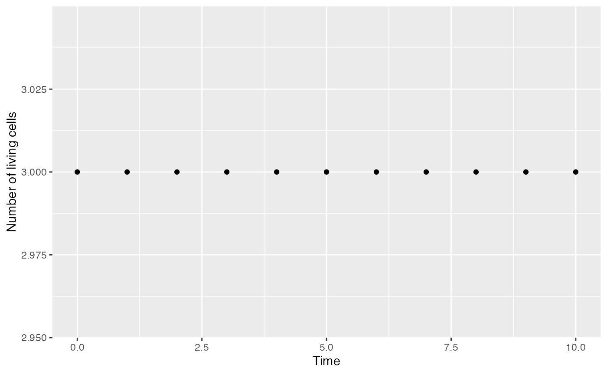

This is a preliminary version of a package designed to simulate spatially-explicit communities.
Getting started
Install the package for R from Github.
library("remotes") remotes::install_github("EricMarcon/SimComm")
Demo
The package allows running community models represented by a spatial pattern. The pattern may be a matrix, a grid of points or a point pattern. To add a new model, an R6 class must be created to describe it. It must inherit from one of these base classes, depending on the pattern it relies on:
community_matrixmodelfor matrices,community_gridmodelfor point grids.
Conway’s game of life
The cm_Conway class is such a model. The community is represented by a logical matrix where each cell is either occupied or not. An occupied cell survives if its number of neighbors is in the values of the vector to_survive, 2 or 3 by default. An empty cell gets populated if its number of neighbors is in the values of the vector to_generate, 3 by default. The neighborhood may be defined according to von Neumann or Moore. Default is Moore neighborood of order 1, i.e. the 8 surrounding cells.
Writing a new model consists of defining its fields (here: to_survive, to_generate and neighborhood), its initialize method and a private method named evolve. The evolve methode codes for the evolution of each individual of the community at each step of time. In Conway’s game of life, each occupied cell may survive or die and each empty cell may come to life or not.
A model is used in two steps. It must first be instantiated through its new method. Its initial pattern and the timeline to run it along are the arguments.
library("SimComm") myModel <- cm_Conway$new(pattern=pm_Conway_blinker(), timeline=0:10)
Several functions allow producing parameterized patterns, see help(patterns). The pm_Conway_blinker() function returns a rectangular pattern designed to oscillate when evolving.
myModel$autoplot()

Evolution is launched by the run method. The timeline defines the evolution time: its first value corresponds to the initial patterns, and the evolve method will be run along all other values. Animation on screen is allowed by animate = TRUE. The time between two steps is defined by sleep, in seconds. If save is set to TRUE, then all patterns are saved.
myModel$run(animate = FALSE, sleep=0.1, save=TRUE)
Saving patterns allows plotting them at a chosen time:
p5 <- myModel$autoplot(time=5)+ theme(legend.position="none") p6 <- myModel$autoplot(time=6)+ theme(legend.position="none") p7 <- myModel$autoplot(time=7)+ theme(legend.position="none") library("gridExtra") grid.arrange(p5, p6, p7, ncol=3)
 The
The along_time method allows applying a function to all saved patterns and return its value along time. The number of occupied cells is constant along the evolution of the model. The sum function is used to count them:
library(magrittr) library(ggplot2) myModel$along_time(sum) %>% ggplot() + geom_point(aes(x=x, y=y)) + labs(x="Time", y="Number of living cells")

A community drift model
This simple model simulates the loss of diversity in a small community. The community is a matrix where each cell contains an individual. Marks are species. At each generation, each individual is replaced by one of its neighbors
First, initialize the model.
myModel <- cm_drift$new(pattern_matrix_individuals(nx = 20, ny = 8, S = 20, Distribution = "lnorm")) myModel$autoplot()
Choose an evolution time of 1000 steps.
myModel$timeline <- 0:1000
Run the model, save its steps.
myModel$run(animate = FALSE, save=TRUE)
Plot the final state.
myModel$autoplot()

Plot the evolution of richness.
myModel$along_time(Richness, Correction="None") %>% ggplot() + geom_point(aes(x=x, y=y)) + labs(x="Time", y="Number of species")